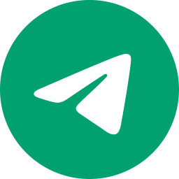

Partes principales
Descubre una amplia variedad de proyectos de código abierto creados por nuestra comunidad. Explora, aprende y contribuye a proyectos que abarcan diversas tecnologías y lenguajes de programación. Desde aplicaciones web hasta herramientas de desarrollo, hay algo para todos.
Aquí, cualquier desarrollador puede presentar sus proyectos para compartir conocimientos y recibir retroalimentación. Todos nuestros proyectos están alojados en un repositorio de GitHub, accesible para cualquier miembro de nuestra comunidad. Nuestro repositorio es un lugar dinámico donde los desarrolladores pueden colaborar y mejorar sus habilidades en un entorno práctico y real.

Si deseas presentar tu propio proyecto, el proceso es sencillo. Puedes enviar una solicitud detallada por correo electrónico a nuestro equipo, o unirte a nuestro canal de Telegram y enviar tu propuesta allí. Nuestro equipo revisará tu proyecto, y una vez aprobado, se añadirá al repositorio y a la pagina web para que toda la comunidad pueda verlo y colaborar.
Únete a una comunidad donde todos nos ayudamos. Participa en nuestro grupo, discute problemas técnicos, comparte soluciones y crece junto con otros desarrolladores. No importa tu nivel de experiencia, siempre hay algo que aprender y alguien con quien colaborar. Tanto si eres un principiante que está dando sus primeros pasos en el mundo del desarrollo como si eres un experto con años de experiencia, encontrarás un lugar en nuestra comunidad.
Contamos con varios canales y grupos en Telegram dedicados a diferentes temas y niveles de habilidad, todos con la intención de fomentar la colaboración y el aprendizaje continuo. En estos espacios, puedes hacer preguntas, ofrecer ayuda, y trabajar en equipo para resolver problemas y desarrollar nuevos proyectos. Nuestra comunidad es inclusiva y acogedora, enfocada en el crecimiento colectivo y el apoyo mutuo.
Canal de Telegram 